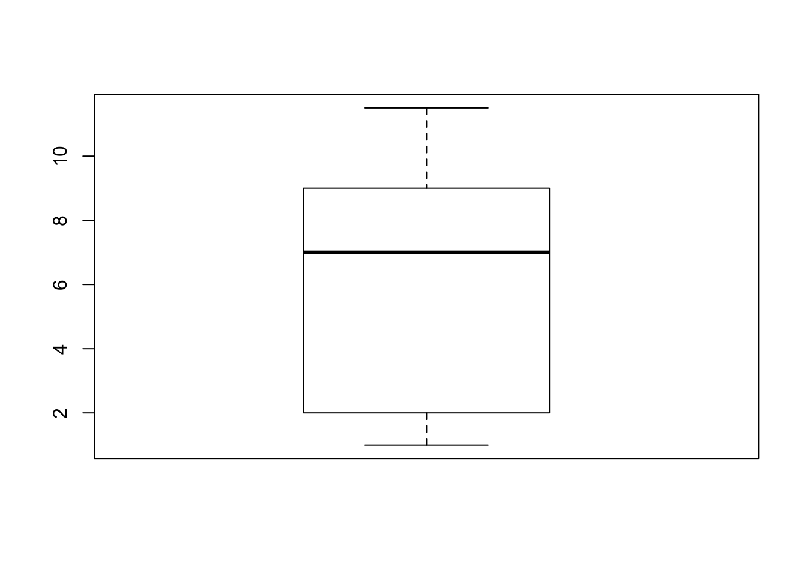
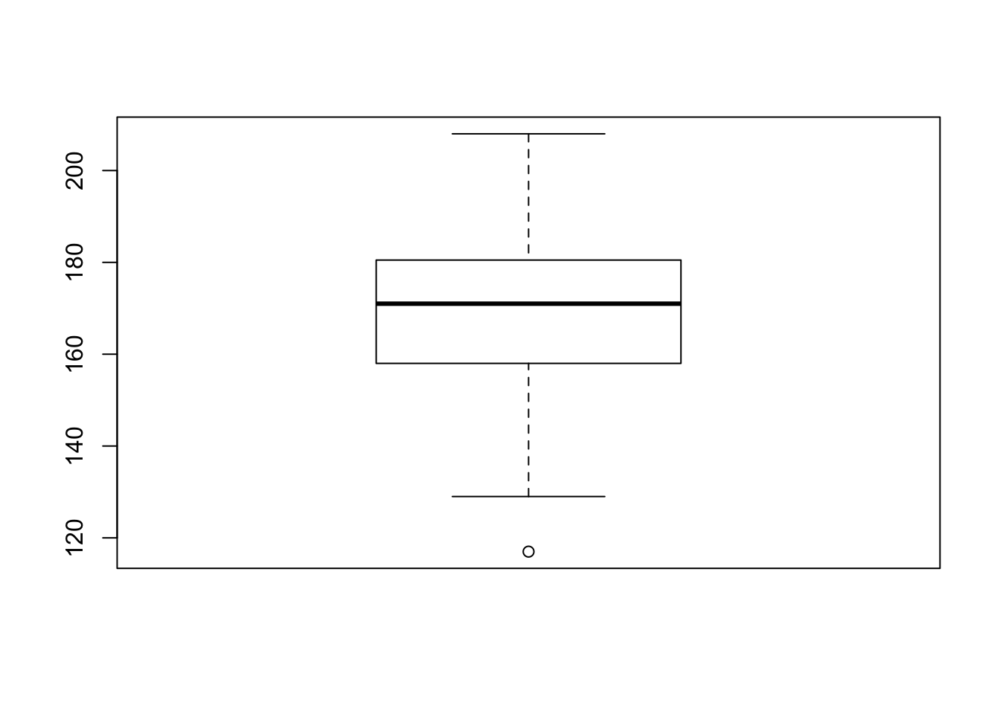

Chapter 3 Descriptive Statistics
3.1 Student Learning Objectives
This chapter deals with numerical and graphical ways to describe and display data. This area of statistics is called descriptive statistics. You will learn to calculate and interpret these measures and graphs. By the end of this chapter, you should be able to:
- Use histograms and box plots in order to display data graphically.
- Calculate measures of central location: mean and median.
- Calculate measures of the spread: variance, standard deviation, and inter-quartile range.
- Identify outliers, which are values that do not fit the rest of the distribution.
3.2 Displaying Data
Once you have collected data, what will you do with it? Data can be described and presented in many different formats. For example, suppose you are interested in buying a house in a particular area. You may have no clue about the house prices, so you may ask your real estate agent to give you a sample data set of prices. Looking at all the prices in the sample is often overwhelming. A better way may be to look at the median price and the variation of prices. The median and variation are just two ways that you will learn to describe data. Your agent might also provide you with a graph of the data.
A statistical graph is a tool that helps you learn about the shape of the distribution of a sample. The graph can be a more effective way of presenting data than a mass of numbers because we can see where data clusters and where there are only a few data values. Newspapers and the Internet use graphs to show trends and to enable readers to compare facts and figures quickly.
Statisticians often start the analysis by graphing the data in order to get an overall picture of it. Afterwards, more formal tools may be applied.
In the previous chapters we used the bar plot, where bars that indicate the frequencies in the data of values are placed over these values. In this chapter our emphasis will be on histograms and box plots, which are other types of plots. Some of the other types of graphs that are frequently used, but will not be discussed in this book, are the stem-and-leaf plot, the frequency polygon (a type of broken line graph) and the pie charts. The types of plots that will be discussed and the types that will not are all tightly linked to the notion of frequency of the data that was introduced in Chapter 2 and intend to give a graphical representation of this notion.
3.2.1 Histograms
The histogram is a frequently used method for displaying the distribution of continuous numerical data. An advantage of a histogram is that it can readily display large data sets. A rule of thumb is to use a histogram when the data set consists of 100 values or more.
One may produce a histogram in R by the application of the function “hist” to a sequence of numerical data. Let us read into R the data frame “ex.1” that contains data on the sex and height and create a histogram of the heights:
ex.1 <- read.csv("_data/ex1.csv")
hist(ex.1$height)FIGURE 3.1: Histogram of Height
The data set, which is the content of the CSV file “ex1.csv”, was used in Chapter 2 in order to demonstrate the reading of data that is stored in a external file into R. The first line of the above script reads in the data from “ex1.csv” into a data frame object named “ex.1” that maintains the data internally in R. The second line of the script produces the histogram. We will discuss below the code associated with this second line.
A histogram consists of contiguous boxes. It has both a horizontal axis and a vertical axis. The horizontal axis is labeled with what the data represents (the height, in this example). The vertical axis presents frequencies and is labeled “Frequency”. By the examination of the histogram one can appreciate the shape of the data, the center, and the spread of the data.
The histogram is constructed by dividing the range of the data (the x-axis) into equal intervals, which are the bases for the boxes. The height of each box represents the count of the number of observations that fall within the interval. For example, consider the box with the base between 160 and 170. There is a total of 19 subjects with height larger that 160 but no more than 170 (that is, \(160 < \texttt{height} \leq 170\)). Consequently, the height of that box4 is 19.
The input to the function “hist” should be a sequence of numerical values. In principle, one may use the function “c” to produce a sequence of data and apply the histogram plotting function to the output of the sequence producing function. However, in the current case we have already the data stored in the data frame “ex.1”, all we need to learn is how to extract that data so it can be used as input to the function “hist” that plots the histogram.
Notice the structure of the input that we have used in order to construct the histogram of the variable “height” in the “ex.1” data frame. One may address the variable “variable.name” in the data frame “dataframe.name” using the format: “dataframe.name$variable.name”. Indeed, when we type the expression “ex.1$height” we get as an output the values of the variable “height” from the given data frame:
ex.1$height## [1] 182 168 172 154 174 176 193 156 157 186 143 182 194 187 171 178 157
## [18] 156 172 157 171 164 142 140 202 176 165 176 175 170 169 153 169 158
## [35] 208 185 157 147 160 173 164 182 175 165 194 178 178 186 165 180 174
## [52] 169 173 199 163 160 172 177 165 205 193 158 180 167 165 183 171 191
## [69] 191 152 148 176 155 156 177 180 186 167 174 171 148 153 136 199 161
## [86] 150 181 166 147 168 188 170 189 117 174 187 141 195 129 172This is a numeric sequence and can serve as the input to a function that expects a numeric sequence as input, a function such as “hist”. (But also other functions, for example, “sum” and “cumsum”.)
There are 100 observations in the variable “ex.1$height”. So many observations cannot be displayed on the screen on one line. Consequently, the sequence of the data is wrapped and displayed over several lines. Notice that the square brackets on the left hand side of each line indicate the position in the sequence of the first value on that line. Hence, the number on the first line is “[1]”. The number on the second line is “[16]”, since the second line starts with the 16th observation in the display given in the book. Notice, that numbers in the square brackets on your R Console window may be different, depending on the setting of the display on your computer.
3.2.2 Box Plots
The box plot, or box-whisker plot, gives a good graphical overall impression of the concentration of the data. It also shows how far from most of the data the extreme values are. In principle, the box plot is constructed from five values: the smallest value, the first quartile, the median, the third quartile, and the largest value. The median, the first quartile, and the third quartile will be discussed here, and then once more in the next section.
The median, a number, is a way of measuring the “center” of the data. You can think of the median as the “middle value,” although it does not actually have to be one of the observed values. It is a number that separates ordered data into halves. Half the values are the same size or smaller than the median and half the values are the same size or larger than it. For example, consider the following data that contains 14 values:
\[1,\; 11.5,\; 6,\; 7.2,\; 4,\; 8,\; 9,\; 10,\; 6.8,\; 8.3,\; 2,\; 2,\; 10,\; 1\] Ordered, from smallest to largest, we get:
\[1,\; 1,\; 2,\; 2,\; 4,\; 6,\; 6.8,\; 7.2,\; 8,\; 8.3,\; 9,\; 10,\; 10,\; 11.5\]
The median is between the 7th value, 6.8, and the 8th value 7.2. To find the median, add the two values together and divide by 2:
\[\frac{6.8+7.2}{2} = 7\] The median is 7. Half of the values are smaller than 7 and half of the values are larger than 7.
Quartiles are numbers that separate the data into quarters. Quartiles may or may not be part of the data. To find the quartiles, first find the median or second quartile. The first quartile is the middle value of the lower half of the data and the third quartile is the middle value of the upper half of the data. For illustration consider the same data set from above:
\[1,\; 1,\; 2,\; 2,\; 4,\; 6,\; 6.8,\; 7.2,\; 8,\; 8.3,\; 9,\; 10,\; 10,\; 11.5\]
The median or second quartile is 7. The lower half of the data is:
\[1,\; 1,\; 2,\; 2,\; 4,\; 6,\; 6.8\] The middle value of the lower half is 2. The number 2, which is part of the data in this case, is the first quartile which is denoted Q1. One-fourth of the values are the same or less than 2 and three-fourths of the values are more than 2.
The upper half of the data is:
\[7.2,\; 8,\; 8.3,\; 9,\; 10,\; 10,\; 11.5\] The middle value of the upper half is 9. The number 9 is the third quartile which is denoted Q3. Three-fourths of the values are less than 9 and one-fourth of the values5 are more than 9.
Outliers are values that do not fit with the rest of the data and lie outside of the normal range. Data points with values that are much too large or much too small in comparison to the vast majority of the observations will be identified as outliers. In the context of the construction of a box plot we identify potential outliers with the help of the inter-quartile range (IQR). The inter-quartile range is the distance between the third quartile (Q3) and the first quartile (Q1), i.e., \(\mbox{IQR} = \mbox{Q3} - \mbox{Q1}\). A data point that is larger than the third quartile plus 1.5 times the inter-quartile range will be marked as a potential outlier. Likewise, a data point smaller than the first quartile minus 1.5 times the inter-quartile range will also be so marked. Outliers may have a substantial effect on the outcome of statistical analysis, therefore it is important that one is alerted to the presence of outliers.
In the running example we obtained an inter-quartile range of size 9-2=7. The upper threshold for defining an outlier is \(9+1.5 \times 7 = 19.5\) and the lower threshold is \(2-1.5 \times 7 = -8.5\). All data points are within the two thresholds, hence there are no outliers in this data.
In the construction of a box plot one uses a vertical rectangular box and two vertical “whiskers” that extend from the ends of the box to the smallest and largest data values that are not outliers. Outlier values, if any exist, are marked as points above or blow the endpoints of the whiskers. The smallest and largest non-outlier data values label the endpoints of the axis. The first quartile marks one end of the box and the third quartile marks the other end of the box. The central 50% of the data fall within the box.
One may produce a box plot with the aid of the function “boxplot”. The input to the function is a sequence of numerical values and the output is a plot. As an example, let us produce the box plot of the 14 data points that were used as an illustration:
boxplot(c(1,11.5,6,7.2,4,8,9,10,6.8,8.3,2,2,10,1))
Observe that the end points of the whiskers are 1, for the minimal value, and 11.5 for the largest value. The end values of the box are 9 for the third quartile and 2 for the first quartile. The median 7 is marked inside the box.
Next, let us examine the box plot for the height data:
boxplot(ex.1$height)
In order to assess the plot let us compute quartiles of the variable:
summary(ex.1$height)## Min. 1st Qu. Median Mean 3rd Qu. Max.
## 117.00 158.00 171.00 170.11 180.25 208.00The function “summary”, when applied to a numerical sequence, produce the minimal and maximal entries, as well the first, second and third quartiles (the second is the Median). It also computes the average of the numbers (the Mean), which will be discussed in the next section.
Let us compare the results with the box plot for the height data. Observe that the median 171 coincides with the thick horizontal line inside the box and that the lower end of the box coincides with first quartile 158.0 and the upper end with 180.2, which is the third quartile. The inter-quartile range is \(180.2 - 158.0 = 22.2\). The upper threshold is \(180.2 + 1.5 \times 22.2 = 213.5\). This threshold is larger than the largest observation (208.0). Hence, the largest observation is not an outlier and it marks the end of the upper whisker. The lower threshold is \(158.0 - 1.5 \times 22.2 = 124.7\). The minimal observation (117.0) is less than this threshold. Hence it is an outlier and it is marked as a point below the end of the lower whisker. The second smallest observation is 129. It lies above the lower threshold and it marks the end point of the lower whisker.
3.3 Measures of the Center of Data
The two most widely used measures of the central location of the data are the mean (average) and the median. To calculate the average weight of 50 people one should add together the 50 weights and divide the result by 50. To find the median weight of the same 50 people, one may order the data and locate a number that splits the data into two equal parts. The median is generally a better measure of the center when there are extreme values or outliers because it is not affected by the precise numerical values of the outliers. Nonetheless, the mean is the most commonly used measure of the center.
We shall use small Latin letters such as \(x\) to mark the sequence of data. In such a case we may mark the sample mean by placing a bar over the \(x\): \(\bar x\) (pronounced “\(x\) bar”).
The mean can be calculated by averaging the data points or it also can be calculated with the relative frequencies of the values that are present in the data. In the latter case one multiplies each distinct value by its relative frequency and then sum the products across all values. To see that both ways of calculating the mean are the same, consider the data:
\[1,\; 1,\; 1,\; 2,\; 2,\; 3,\; 4,\; 4,\; 4,\; 4,\; 4\] In the first way of calculating the mean we get:
\[\bar x = \frac{1 + 1 + 1 + 2 + 2 + 3 + 4 + 4 + 4 + 4 + 4}{11} = 2.7\;.\]
Alternatively, we may note that the distinct values in the sample are 1, 2, 3, and 4 with relative frequencies of 3/11, 2/11, 1/11 and 5/11, respectively. The alternative method of computation produces:
\[\bar x = 1\times \frac{3}{11} + 2 \times \frac{2}{11} + 3 \times \frac{1}{11} + 4 \times \frac{5}{11} = 2.7\;.\]
3.3.1 Skewness, the Mean and the Median
FIGURE 3.2: Three Histograms
Consider the following data set:
\[4,\; 5,\; 6,\; 6,\; 6,\; 7,\; 7,\; 7,\; 7,\; 7,\; 7,\; 8,\; 8,\; 8,\; 9,\; 10\] This data produces the upper most histogram in Figure 3.2. Each interval has width one and each value is located at the middle of an interval. The histogram displays a symmetrical distribution of data. A distribution is symmetrical if a vertical line can be drawn at some point in the histogram such that the shape to the left and to the right of the vertical line are mirror images of each other.
Let us compute the mean and the median of this data:
x <- c(4,5,6,6,6,7,7,7,7,7,7,8,8,8,9,10)
mean(x)## [1] 7median(x)## [1] 7The mean and the median are each 7 for these data. In a perfectly symmetrical distribution, the mean and the median are the same6.
The functions “mean” and “median” were used in order to compute the mean and median. Both functions expect a numeric sequence as an input and produce the appropriate measure of centrality of the sequence as an output.
The histogram for the data:
\[4,\; 5,\; 6,\; 6,\; 6,\; 7,\; 7,\; 7,\; 7,\; 7,\; 7,\; 8\] is not symmetrical and is displayed in the middle of Figure 3.2. The right-hand side seems “chopped off” compared to the left side. The shape of the distribution is called skewed to the left because it is pulled out towards the left.
Let us compute the mean and the median for this data:
x <- c(4,5,6,6,6,7,7,7,7,7,7,8)
mean(x)## [1] 6.4166667median(x)## [1] 7(Notice that the original data is replaced by the new data when object x is reassigned.) The median is still 7, but the mean is less than 7. The relation between the mean and the median reflects the skewing.
Consider yet another set of data:
\[6,\; 7,\; 7,\; 7,\; 7,\; 7,\; 7,\; 8,\; 8,\; 8,\; 9,\; 10\] The histogram for the data is also not symmetrical and is displayed at the bottom of Figure 3.2. Notice that it is skewed to the right. Compute the mean and the median:
x <- c(6,7,7,7,7,7,7,8,8,8,9,10)
mean(x)## [1] 7.5833333median(x)## [1] 7The median is yet again equal to 7, but this time the mean is greater than 7. Again, the mean reflects the skewing.
In summary, if the distribution of data is skewed to the left then the mean is less than the median. If the distribution of data is skewed to the right then the median is less than the mean.
Examine the data on the height in “ex.1”:
mean(ex.1$height)## [1] 170.11median(ex.1$height)## [1] 171Observe that the histogram of the height (Figure 3.1) is skewed to the left. This is consistent with the fact that the mean is less than the median.
3.4 Measures of the Spread of Data
One measure of the spread of the data is the inter-quartile range that was introduced in the context of the box plot. However, the most important measure of spread is the standard deviation.
Before dealing with the standard deviation let us discuss the calculation of the variance. If \(x_i\) is a data value for subject \(i\) and \(\bar x\) is the sample mean, then \(x_i-\bar x\) is called the deviation of subject \(i\) from the mean, or simply the deviation. In a data set, there are as many deviations as there are data values. The variance is in principle the average of the squares of the deviations.
Consider the following example: In a fifth grade class, the teacher was interested in the average age and the standard deviation of the ages of her students. Here are the ages of her students to the nearest half a year:
\[\begin{aligned} & 9,\; 9.5,\; 9.5,\; 10,\; 10,\; 10,\; 10,\; 10.5,\; 10.5,\; 10.5,\; 10.5,\; 11,\; 11,\; 11,\; 11,\; 11,\; 11,\;\\ & 11.5,\; 11.5,\; 11.5\;.\end{aligned}\]
In order to explain the computation of the variance of these data let us create an object x that contains the data:
x <- c(9,9.5,9.5,10,10,10,10,10.5,10.5,10.5,10.5,11,11,11,11,11,11,11.5,11.5,11.5)
length(x)## [1] 20Pay attention to the fact that we did not write the “+” at the beginning of the second line. That symbol was produced by R when moving to the next line to indicate that the expression is not complete yet and will not be executed. Only after inputting the right bracket and the hitting of the Return key does R carry out the command and creates the object “x”. When you execute this example yourself on your own computer make sure not to copy the “+” sign. Instead, if you hit the return key after the last comma on the first line, the plus sign will be produced by R as a new prompt and you can go on typing in the rest of the numbers.
The function “length” returns the length of the input sequence. Notice that we have a total of 20 data points.
The next step involves the computation of the deviations:
x.bar <- mean(x)
x.bar## [1] 10.525x - x.bar## [1] -1.525 -1.025 -1.025 -0.525 -0.525 -0.525 -0.525 -0.025 -0.025 -0.025
## [11] -0.025 0.475 0.475 0.475 0.475 0.475 0.475 0.975 0.975 0.975The average of the observations is equal to 10.525 and when we delete this number from each of the components of the sequence x we obtain the deviations. For example, the first deviation is obtained as 9 - 10.525 = -1.525, the second deviation is 9.5 - 10.525 = -1.025, and so forth. The 20th deviation is 11.5 - 10.525 = 0.975, and this is the last number that is presented in the output.
From a more technical point of view observe that the expression that computed the deviations, “x - x.bar”, involved the deletion of a single value (x.bar) from a sequence with 20 values (x). The expression resulted in the deletion of the value from each component of the sequence. This is an example of the general way by which R operates on sequences. The typical behavior of R is to apply an operation to each component of the sequence.
As yet another illustration of this property consider the computation of the squares of the deviations:
(x - x.bar)^2## [1] 2.325625 1.050625 1.050625 0.275625 0.275625 0.275625 0.275625
## [8] 0.000625 0.000625 0.000625 0.000625 0.225625 0.225625 0.225625
## [15] 0.225625 0.225625 0.225625 0.950625 0.950625 0.950625Recall that “x - x.bar” is a sequence of length 20. We apply the square function to this sequence. This function is applied to each of the components of the sequence. Indeed, for the first component we have that \((-1.525)^2 = 2.325625\), for the second component \((-1.025)^2 = 1.050625\), and for the last component \((0.975)^2 = 0.950625\).
For the variance we sum the square of the deviations and divide by the total number of data values minus one (\(n-1\)). The standard deviation is obtained by taking the square root of the variance:
sum((x - x.bar)^2)/(length(x)-1)## [1] 0.5125sqrt(sum((x - x.bar)^2)/(length(x)-1))## [1] 0.71589105If the variance is produced as a result of dividing the sum of squares by the number of observations minus one then the variance is called the sample variance.
The function “var” computes the sample variance and the function “sd” computes the standard deviations. The input to both functions is the sequence of data values and the outputs are the sample variance and the standard deviation, respectively:
var(x)## [1] 0.5125sd(x)## [1] 0.71589105In the computation of the variance we divide the sum of squared deviations by the number of deviations minus one and not by the number of deviations. The reason for that stems from the theory of statistical inference that will be discussed in Part II of this book. Unless the size of the data is small, dividing by \(n\) or by \(n-1\) does not introduce much of a difference.
The variance is a squared measure and does not have the same units as the data. Taking the square root solves the problem. The standard deviation measures the spread in the same units as the data.
The sample standard deviation, \(s\), is either zero or is larger than zero. When \(s=0\), there is no spread and the data values are equal to each other. When \(s\) is a lot larger than zero, the data values are very spread out about the mean. Outliers can make \(s\) very large.
The standard deviation is a number that measures how far data values are from their mean. For example, if the data contains the value 7 and if the mean of the data is 5 and the standard deviation is 2, then the value 7 is one standard deviation from its mean because \(5 + 1 \times 2 = 7\). We say, then, that 7 is one standard deviation larger than the mean 5 (or also say “to the right of 5”). If the value 1 was also part of the data set, then 1 is two standard deviations smaller than the mean (or two standard deviations to the left of 5) because \(5 - 2 \times 2 = 1\).
The standard deviation, when first presented, may not be too simple to interpret. By graphing your data, you can get a better “feel” for the deviations and the standard deviation. You will find that in symmetrical distributions, the standard deviation can be very helpful but in skewed distributions, the standard deviation is less so. The reason is that the two sides of a skewed distribution have different spreads. In a skewed distribution, it is better to look at the first quartile, the median, the third quartile, the smallest value, and the largest value.
3.5 Exercises
Exercise 3.1 Three sequences of data were saved in 3 R objects named “x1”, “x2” and “x3”, respectively. The application of the function “summary” to each of these objects is presented below:
> summary(x1)
Min. 1st Qu. Median Mean 3rd Qu. Max.
0.000 2.498 3.218 3.081 3.840 4.871
> summary(x2)
Min. 1st Qu. Median Mean 3rd Qu. Max.
0.0001083 0.5772000 1.5070000 1.8420000 2.9050000 4.9880000
> summary(x3)
Min. 1st Qu. Median Mean 3rd Qu. Max.
2.200 3.391 4.020 4.077 4.690 6.414In Figure 3.3 one may find the histograms of these three data sequences, given in a random order. In Figure 3.4 one may find the box plots of the same data, given in yet a different order.
Match the summary result with the appropriate histogram and the appropriate box plot.
Is the value 0.000 in the sequence “
x1” an outlier?- Is the value 6.414 in the sequence “
x3” an outlier?
FIGURE 3.3: Three Histograms
FIGURE 3.4: Three Box Plots
Exercise 3.2 The number of toilet facilities in 30 buildings were counted. The results are recorded in an R object by the name “x”. The frequency table of the data “x” is:
> table(x)
x
2 4 6 8 10
10 6 10 2 2What is the mean (\(\bar x\)) of the data?
What is the sample standard deviation of the data?
What is the median of the data?
What is the inter-quartile range (IQR) of the data?
- How many standard deviations away from the mean is the value 10?
3.6 Summary
Glossary
- Median:
A number that separates ordered data into halves: half the values are the same number or smaller than the median and half the values are the same number or larger than the median. The median may or may not be part of the data.
- Quartiles:
The numbers that separate the data into quarters. Quartiles may or may not be part of the data. The second quartile is the median of the data.
- Outlier:
An observation that does not fit the rest of the data.
- Interquartile Range (IQR)
: The distance between the third quartile (Q3) and the first quartile (Q1). IQR = Q3 - Q1.
- Mean:
A number that measures the central tendency. A common name for mean is ‘average.’ The term ‘mean’ is a shortened form of ‘arithmetic mean.’ By definition, the mean for a sample (denoted by \(\bar x\)) is
\[\bar x = \frac{\mbox{Sum of all values in the sample}}{\mbox{Number of values in the sample}}\;.\]
- (Sample) Variance:
Mean of the squared deviations from the mean. Square of the standard deviation. For a set of data, a deviation can be represented as \(x - \bar x\) where \(x\) is a value of the data and \(\bar x\) is the sample mean. The sample variance is equal to the sum of the squares of the deviations divided by the difference of the sample size and 1:
\[s^2 = \frac{\mbox{Sum of the squares of the deviations}}{\mbox{Number of values in the sample}-1}\;.\]
- (Sample) Standard Deviation:
A number that is equal to the square root of the variance and measures how far data values are from their mean. \(s = \sqrt{s^2}\).
Discuss in the forum
An important practice is to check the validity of any data set that you are supposed to analyze in order to detect errors in the data and outlier observations. Recall that outliers are observations with values outside the normal range of values of the rest of the observations.
It is said by some that outliers can help us understand our data better. What is your opinion?
When forming your answer to this question you may give an example of how outliers may provide insight or, else, how they may abstract our understanding. For example, consider the price of a stock that tend to go up or go down at most 2% within each trading day. A sudden 5% drop in the price of the stock may be an indication to reconsidering our position with respect to this stock.
Commonly Used Symbols
The symbol \(\sum\) means to add or to find the sum.
\(n\) = the number of data values in a sample.
\(\bar x\) = the sample mean.
\(s\) = the sample standard deviation.
\(f\) = frequency.
\(f/n\) = relative frequency.
\(x\) = numerical value.
Commonly Used Expressions
\(x \times (f_x/n)\) = A value multiplied by its respective relative frequency.
\(\sum_{i=1}^n x_i\) = The sum of the data values.
\(\sum_x (x \times f_x/n)\)= The sum of values multiplied by their respective relative frequencies.
\(x - \bar x\) = Deviations from the mean (how far a value is from the mean).
\((x - \bar x)^2\) = Deviations squared.
Formulas:
Mean: \(\bar x = \frac{1}{n} \sum_{i=1}^n x_i = \sum_x \big(x \times (f_x/n)\big)\)
Variance: \(s^2 = \frac{1}{n-1}\sum_{i=1}^n (x_i - \bar x)^2 = \frac{n}{n-1}\sum_x \big((x - \bar x)^2\times (f_x/n)\big)\)
Standard Deviation: \(s = \sqrt{s^2}\)
In some books an histogram is introduced as a form of a density. In densities the area of the box represents the frequency or the relative frequency. In the current example the height would have been 19/10 = 1.9 if the area of the box would have represented the frequency and it would have been \((19/100)/10 = 0.019\) if the area of the box would have represented the relative frequency. However, in this book we follow the default of
Rin which the height represents the frequency.↩The actual computation in
Rof the first quartile and the third quartile may vary slightly from the description given here, depending on the exact structure of the data.↩In the case of a symmetric distribution the vertical line of symmetry is located at the mean, which is also equal to the median.↩